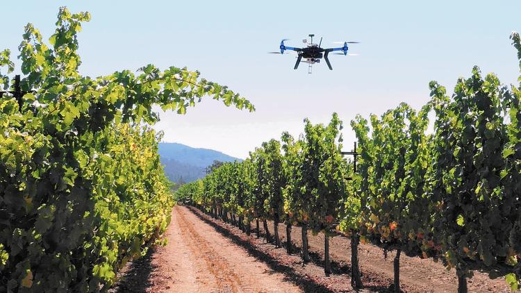

I am currently a Post Doctoral Researcher at the AMR Lab of the University of Virginia. My research focuses on Assured Autonomy, Energy-Aware path planning of mobile robots, Localization, and more in general on Autonomous systems. I am a Research Affiliate of The Scuola Superiore Sant'Anna, Pisa.
Previously, I was a Post Doctoral Researcher of ReTiS Lab at the Scuola Superiore S.Anna, Pisa. In March 2017, I finished my PhD. in Emerging Digital Technologies, curriculum Embedded System at the ReTiS Lab of the Scuola Superiore Sant'Anna, Pisa, under the supervision of Professor Giorgio Buttazzo. From September 2015 I was a visiting Ph.D. Student for six months at the GRASP lab of University of Pennsylvania under the supervision of George J. Pappas. In 2013, I spent 6 months at the University of Porto where I wrote my master thesis under the supervision of Professor Luis Almeida.
Modern robotic systems leverage the growing advances in control, computer vision, and machine learning coupled with technological advances in sensing, computation, and communication to achieve complex autonomous operations often in unknown environments. The lack of understanding of when and how machine learning works makes it hard to provide guarantees for such systems during safety- critical operations. This project focuses on the development of techniques to provide safety assurance at run-time as robotic systems are deployed to perform complex tasks in which learning is required due to uncertainities
Nowadays, real-time localization of trains is challenging both for safety and technological issues. Current techniques estimate the position of a train making use of different types of sensors, including balise transponders, odometry, Global Navigation Satellite Systems (GNSS), and Inertial Measuring Units (IMU). GNSS is becoming a de-facto standard in train localization for its simplicity and already built-in infrastructure. However, it cannot guarantee a continuous and accurate service, since its precision depends on the surrounding environment, and because satellite signals are not received in certain conditions (e.g., in tunnels, canyons, and near mountains). At the same time, the odometry derived from the encoders mounted on the wheels is subject to a significant drift, which increases by time and can only be reset in the presence of a balise. The project explores IMU capabilities for detecting a number of features on the railway and localize the train without the need of GNSS.
Nowadays, Unmanned Aerial Vehicles (UAVs) are used in a wide range of application domains ranging from agriculture to industry. For instance, using drones for parcel delivery or goods transportation in emergency missions are emerging applications raising a lot of interest in many companies. Although flight planning systems are increasing their complexity for finding optimal UAVs' trajectories depending on the specific task, there is still a significant gap between theory and practice due to the simplifications and strong pessimism in the assumptions on the energy consumption that further reduce the already limited mission time of UAVs. This project proposes an accurate power and mass estimation model based on neural networks that can accurately predict the energy consumption of generic vehicles carrying a payload whose weight may be unknown. Two applications, among all the possible examples, that would benefit from the proposed approach are drone delivery and liquid spraying in precision agriculture (e.g., herbicides).
AVIATOR: is an innovative project, proposed by ReTiSLab and LandLAb of the Scuola Superiore S. Anna, that aims at using fleets of drones to monitoring the growth of plants in farms and finding plant infections on time to prevent bad crops. Using a team of cooperating drones that autonomously take off and inspects the entire field could drastically reduce the costs preventing extensive use of herbicides and reducing the manual effort of the farmer.
Click here to watch a short interview from a local TV about the project . 